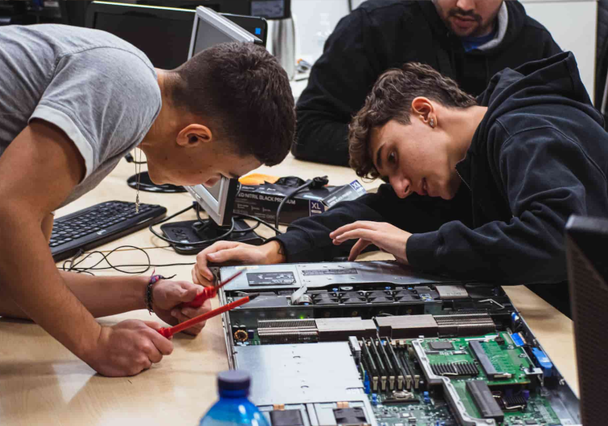

Grado Medio: SMR
Empieza tus andanzas por la informática con el Grado Medio en Sistemas Microinformáticos y Redes.
Grado Superior: ASIR
Si lo tuyo son las redes y los servicios, sigue con el Grado Superior en Administración de Sistemas Informáticos en Red.
Grado Superior: DAW
En el Grado Superior en Desarrollo de Aplicaciones Web lo aprenderás todo sobre PHP, JavaScript y otras tecnologías.
Grado Superior: DAM
Para crear aplicaciones en sobremesa y en teléfonos móviles, estudia el Grado Superior en Desarrollo de Aplicaciones Multiplataforma.